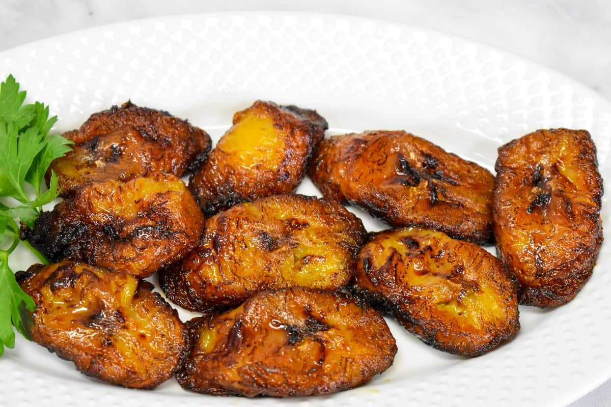

Succulent Plantain 🍌
Fried ripe plantains have a crispy, caramelized texture and irresistibly sweet taste.
It's a ubiquitous African/Caribbean dish that is served with almost every meal,
and it's enjoyed in other parts of the world as well.
This is a quick and easy recipe that is sure to bring the taste of the African/Caribbean into your home.

Let's start cooking!🍴
Ingredient list (Serving: 2 people)
- 2 ripe plantains
- 3 tablespoons vegetable oil
- Sea salt
Instructions
- Peel plantains by cutting off both ends, and cutting a slit down the side of each plantain
- Remove the plantain peel by peeling it side to side rather than lengthwise.
- Cut the peeled plantains into 1/4-inch-thick slices. Diagonally is preferred because it provides a larger surface for caramelization; it can be cut straight across into rounds.
- Drizzle just enough oil into a nonstick pan to coat the bottom of the pan, and place it on medium heat.
- When the oil begins to shimmer, but not smoke, add plantains (work in batches). Fry for 1 1/2 minutes on one side, flip and cook for 1 minute on the other side.
- Remove plantains from the pan and drain on paper towels.
- Continue frying in batches until all the plantains are fried.
- Sprinkle lightly with sea salt to give a sweet and salty taste to your fried ripe plantains.
- Serve and enjoy 😋